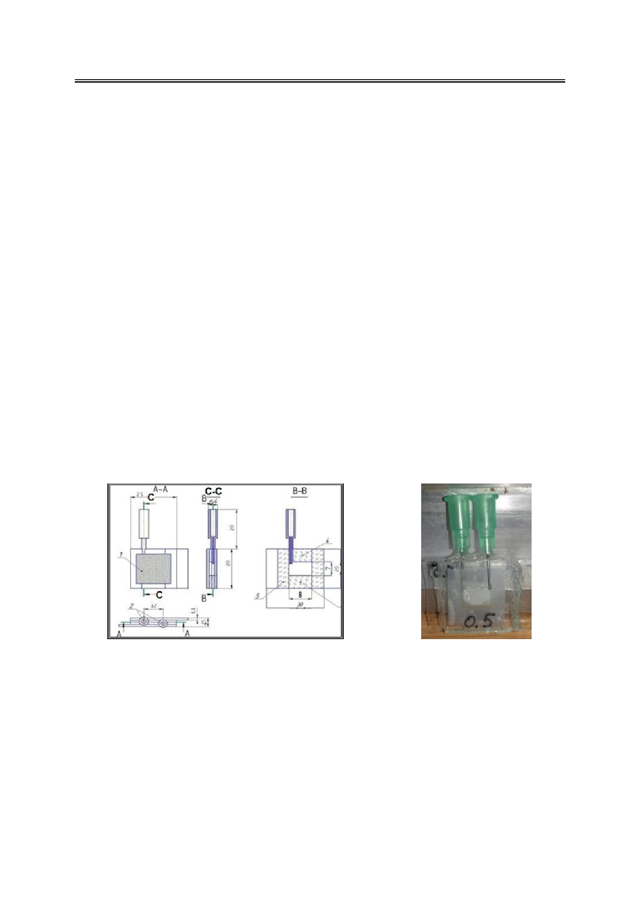

Метод затухающего потока в реологии полимерных пористых пленок, заполненных жидкими
кристаллами
Подобный ньютоновский поток реализован в экспериментах с потоками ЖК через
пористые пленки, описываемые в данной работе. Здесь исследование затухающего пото-
ка обеспечивает измерение эффективных значений сдвиговой вязкости, которые зависят
от ориентационной структуры ЖК внутри пор.
Экспериментальная часть
Конструкция экспериментальной ячейки для исследования затухающего потока
представлена на рис. 2. Во многом она схожа с ячейками, ранее использованными для ис-
следований линейных и нелинейных явлений в затухающих потоках жидких кристаллов
через плоские капилляры [7−10]. Основным отличием является использование образцов
пористой пленки полиэтилентерефтората (ПЭТ) толщиной 23 мкм с цилиндрическими
порами постоянного диаметра d=2r, ориентированными нормально относительно плен-
ки. Пористая пленка разделяет две части ячейки, которые связаны открытыми вертикаль-
ными трубками диаметра D. Предварительно образцы пленки обрабатывали 1%-ным
раствором хлорокомплексной соли хрома и стеариновой кислоты в изопропиловом спир-
те (хромолан) для создания гомеотропного сцепления жидкого кристалла с внутренними
поверхностями пор. После заполнения жидкостью создавался затухающий поток через
пленку за счет некоторой начальной разности ΔHmax в уровнях менисков, образующейся
в открытых трубках, как показано на рис. 1. Движение менисков регистрировали с помо-
щью цифровой камеры. Дальнейший анализ изображений, полученных в разные момен-
ты времени, позволил получать зависимости ΔH (t), которые сравнивали с теоретической
зависимостью (3). Температуру ячейки поддерживали с погрешностью ±0.1°C.
а
б
Рис. 2. Экспериментальная ячейка: а) конструкция; б) фотография образца.
Результаты и их обсуждение
На первом этапе мы исследовали затухающий поток этанола, который является
изотропной ньютоновской жидкостью с хорошо изученными реологическими свойства-
ми. Типичные временные зависимости ΔH (t), полученные для образцов пленок с различ-
ными значениями диаметров и плотности пор, показаны на рис. 3.
Во всех случаях экспериментальные кривые соответствуют теоретической зависимо-
сти, описываемой уравнением (3). Отметим хорошую повторяемость результатов измере-
30
Российский технологический журнал 2017 Том 5 № 5